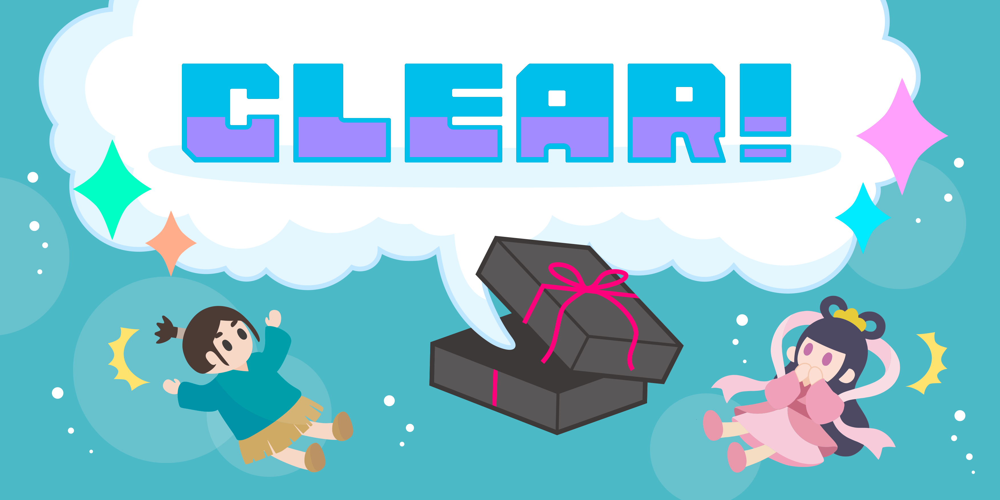

ウラシマボックスクリア！
あなたは日記帳を破り、オトヒメに渡した。
答えの紙を握った二人は水晶を触り、箱を渡す場面にまで戻った。
オトヒメは手に持っている箱をしまい、ウラシマに微笑んだ。
「竜宮城での出来事は、私たちだけの秘密です。陸に戻ったあとは誰にも話さないこと！約束ですよ？」
僕は頷いて、オトヒメに手を振った。
忠告には従うものだな...と思いながら陸に帰るのだった。

最初のページへあなたは日記帳を破り、オトヒメに渡した。
答えの紙を握った二人は水晶を触り、箱を渡す場面にまで戻った。
オトヒメは手に持っている箱をしまい、ウラシマに微笑んだ。
「竜宮城での出来事は、私たちだけの秘密です。陸に戻ったあとは誰にも話さないこと！約束ですよ？」
僕は頷いて、オトヒメに手を振った。
忠告には従うものだな...と思いながら陸に帰るのだった。

最初のページへ